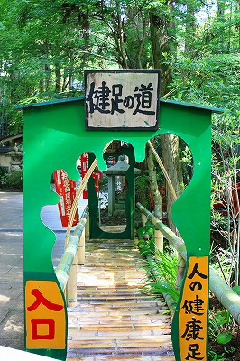
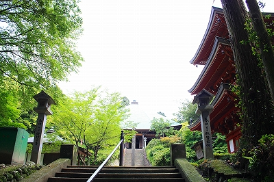

油山寺/静岡県
静岡県の
油山寺
、静岡県内でも屈指の古刹であり、庶民には
眼病平癒の寺
として名高い。
…のだが…
どうも道中の看板↓からして
素敵なスメルが漂いまくり
。
世界一願いの叶う大念珠
って…
国宝！かと思ったら国
之
宝
って。まあ、アタシゃ国宝マニアじゃないんで別にイイすけど…
期待値がグングン上昇しつつ向かった先は山中にある広大なお寺であった。
先に断っておきますが、ココのお寺はマジで古い歴史があり人々の信仰を集めてる
立派なお寺
なんです。
このあと、諸々突っ込ませてもらいますが、その前にこの油山寺の額縁に入れても恥ずかしくない素晴らしい歴史を紹介しておきましょう。
医王山薬王院油山寺。今から約1300年前、大宝元（701）年に行基によって彫られた薬師如来像を奉安したのがそもそもの始まりだという。
行基といえば奈良の大仏をはじめ寺院のみならず港湾、溜池、橋…あらゆる土木建築工事をプロデュースした
奈良時代の土木系僧侶
。
もちろん日本の仏教史に残る超重要人物だ。そんな人物が開基に携わる油山寺、その後、孝謙天皇が眼病の際祈願したところ全快したのでそれ以降は
目の御仏
として篤く信仰されてきた、という按配。
勿論中世、近世においても場所柄源氏、今川、徳川家の庇護篤く今日にいたるわけです。
いいすか？この辺で。
じゃ正史に記されない裏油山寺案内をはじめますよー。
門前には水子供養の風車が群れを成していてそのビビッドな色合いに怯んだりしていると、献眼者報恩慰霊之碑といったいかにも眼の神様らしい碑があったりして若干カオス感を出している。でもこの辺はまだまだ自然界の通常値を大きく逸脱することはない程度の雰囲気だ。
で、三門。
いきなりお城の門
ですもの。
掛川城の大手門なんだそうで。お城の門がそのままお寺に寄進される、なんてことがあったんですなあ。
ここにも
世界一
願いの叶う大念珠祭と貼紙があった。世界一かあ〜。
この
アバウトな感じの貼紙
が現在の油山寺の座標を暗に示しているように思えるのは気のせいだろうか…
で、門を潜れば新緑の紅葉。秋に来たらさぞかし美しいのだろう。
と、その参道脇に現れた謎の看板。
裸足で竹を踏んで健康になって下さい的趣向の
健康歩道
。
このお寺は目の御仏と同時に
足腰の神様
としても名高い。よってここで足裏を鍛えるのは大いなる意味があるわけですよ。

にしてもここまでの雰囲気とのギャップが…いやいや、素晴らしいですよ。
てなわけで参道を進んで行くと道は二つに分かれる。
直進（階段のある方）すると
本坊
といわれるエリア、左に折れると（赤い燈籠の見える道）本堂に至る道。まずは本坊をめざしましょう。
本坊は中央の庭を建物が囲うようにして建っている。正面には青い瓦屋根が印象的な
宝生殿
、右に静山閣、さらに右に方丈、と続く。
宝生殿の左手には書院がある。手入れの行き届いたややダイナミックな趣の庭だ。
にわにはにわにわとりがいました。→庭には二羽鶏がいました（しかも放し飼い）。
で、
宝生殿
。このエリアの中心的建物だ。
ここにもアバウトな貼紙が。そしてまたしても世界一…
…あちこちに銭で「め」と象られた絵馬が掲げられていた。古くは一銭、最近のは5円玉、50円玉で作られた「め」の字。
このように身体系の祈願ってなぜか
穴の開いたモノ
が奉納されるケースが多い。
例えば穴の開いた小石とか底の抜けた柄杓とか。穴が開く＝目が開くとか耳の通りが良くなる、といった意味合いがあるのだろう。
で、欄間を見たら
巨大な数珠
が架かっていた。うおお、すげー。はっ、これが
世界一願いの叶う大念珠
なのか！
何と長さ
120メートルの巨大念珠
であった。重さは250キロ。珠数は1112個だとか。
この巨大な念珠を3年に1度外に出して信徒の皆さんでこの数珠を廻し百万遍を行うという。それが世界一願いの叶う大念珠祭なのだ。
つまり
「世界で一番願いが叶う」
大念珠なのではなくて、願いの叶う
「世界一の大念珠」
、という意味なのだ(と思う）。
誇大広告じゃなかった（のだと思う）。よかったよかった（と思いたい）。
宝生殿参拝後、脇にある方丈を見たらそこにも大念珠が。コレつまりさっきの宝生殿からず〜っとつながってるわけですよね…
ちなみに宝生殿と方丈の位置関係はこんな↓感じ。
こんなに長い念珠を廻す場所ってどんだけ広いんだろう。というかそもそもこの念珠どうやって外に出すんでしょうね。
それを考えたら夜も眠れなくなっちゃいます（by
三球照代
ね）。
方丈では絵馬をはじめ諸々開運グッズ的なモノを売っている。
で、奉納されている絵馬。
目の絵馬が多いが中には足腰の神様ということで足型が描かれた絵馬も奉納されている。もちろん銭で「め」の字が象られた絵馬も。
そんなこんなで本坊エリアの参拝終了、で次に本堂のあるエリアに進む。
本堂である薬師堂までの道は小さな渓沿いの小道を歩いていく。
どうでもいいけど看板の字、味がありすぎですね。
道を進んでいくと段々山が深くなってくる。昼でも薄暗い。
渓の最上流がここ。小さな滝になっている。滝は行場なのだろうか。赤い小屋が山深い緑の中にあって異彩を放っている。
そうこうしている内に視界が開け本堂のあるエリアに到着する。
正面に本堂、右手に三重塔、左手に大師堂がある。

三重塔は小さいものだが、元は
源頼朝が眼病全快の御礼に建立した
という由緒正しき塔である。
現存する塔は
桃山期に再建
され、国の重要文化財に指定されている。
この寺には全部で3つの国重文があるが（さっきの大手門と本尊の薬師如来）実際この寺で
国
之
宝
に一番近いのはこの三重塔かな。
で、
大師堂
。比較的最近建てられた、あるいは修復されたようで壁も真っ白で基礎のコンクリも汚れていない。
中を覗きこむと、あらビックリ。
弘法大師の生誕から入寂までの毎年の姿を一体一体の像にしたためた
年弘法
があるではないか！
これはつまり1年/1の超低速カメラで撮影した動画を3Dで見ているような…ええい、ややこしいわっ！早い話が弘法サマの立体アルバム見たいなモンです。
以前、
東光寺
の年弘法を紹介したが、その後愛知県内で何箇所か年弘法の存在を確認した。
しかし静岡県内での年弘法はコレが初めてだった。もっともカウントしてみると30数体しかないので2年/1ですね。
そして年弘法といえば、
両手両足と口に5本の筆を持って
五行の書をジャンプ一閃一気書きしたという遣唐使時代のエピソード。
↑東光寺のもの
そしてここ油山寺にもありました！五行の書一気書きの像！
あれ？筆がない…
手足口にアタッチメントの穴は開いてるが肝心の筆がないじゃないか。いくら弘法筆を選ばずとはいえ筆が無くては字もかけないぞ。
年弘法といえば五行の書一気書き像が最大のクライマックス、ちょっと残念だなあ。
さて、そんなこんなでいよいよ本堂へ向かうぞ！
…と思ったら、ここで前半終了の笛。ハーフタイムに入ります。
後半に続く
珍寺大道場 HOME